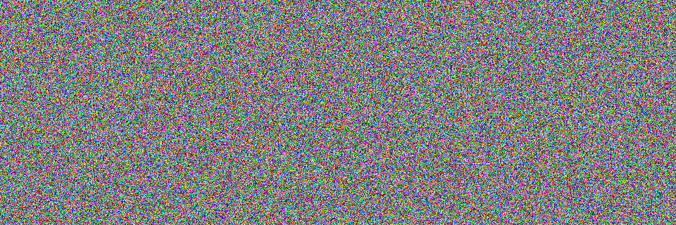
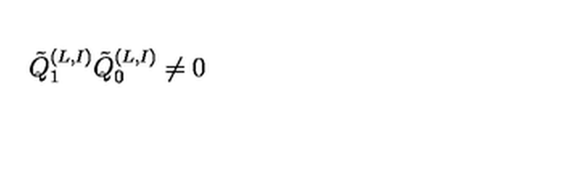
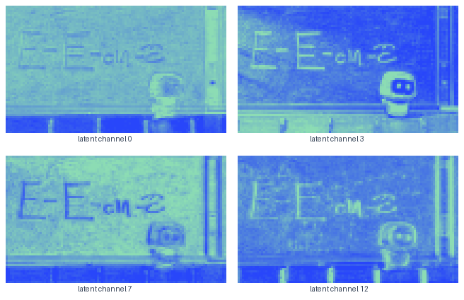
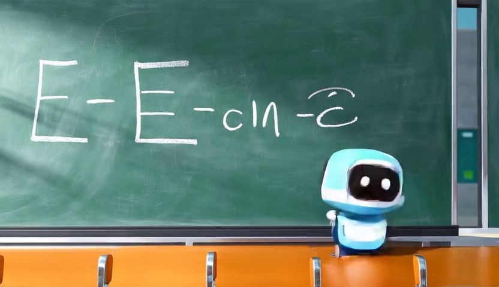
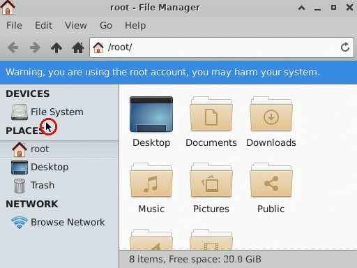

Image → video → interactive computer
imagegenerate pixels
→
videoadd time
→
world modeladd actions + feedback
Turn each unfamiliar problem into one we already know how to solve.
Start with noise and an image


Generation learns how to travel from the left endpoint to the right.
Velocity is the slope of the path
\[
z_t=(1-t)z_{\text{noise}}+t z_{\text{data}}
\]
↓ differentiate with respect to \(t\)
\[
v^\star=\frac{dz_t}{dt}=z_{\text{data}}-z_{\text{noise}}
\]
distance left: \(z_{\text{data}}-z_t\)
slope: \(\dfrac{z_{\text{data}}-z_t}{1-t}=z_{\text{data}}-z_{\text{noise}}\)
Generation follows those arrows repeatedly
sample noise\(z_0\)
predict velocity\(v_\theta(z_t,t,c)\)
update + repeat\(z_{t+\Delta t}\)
Many small moves turn an easy random sample into a structured output.
An image is a one-frame video
image
[C, H, W]→
video
[C, 1, H, W]Add one axis: time.
Video adds time
0
1
2
3
4
same object
smooth motion
consistent scene
Wan generates 81 frames by default
frame 0\(t=0\)
80 intervals\(80/16=5\) seconds
frame 80\(t=5\)
81 RGB frames
→
21 latent time steps
Other valid lengths follow \(4k+1\), such as 33, 49, or 81 frames.
The Wan-VAE compresses the video
[3, 81, 480, 832]encoder→

[16, 21, 60, 104]decoder→

[3, 81, 480, 832]Real Wan-VAE encode/decode example; provenance and hashes.
The latent is a 4D array
−.3.8.1−.6.4.9.2−.1.7.3−.8.5
.6−.2.4.8−.5.1.9.3−.7.2.5−.4
.2.7−.1.5.9−.3.4−.8.6.1−.5.3
\([16,\ 21,\ 60,\ 104]\)
channelstimeheightwidth
No vocabulary and no token IDs—just a compact multi-dimensional array of real numbers.
Split the latent grid into patches
patch size\((1,2,2)\) in latent time, height, width
sequence length\(21\times30\times52=32{,}760\)
token widtheach patch projects to 1536 numbers
A DiT is a transformer for noisy latent patches
noisy latent patches32,760 tokens
→
Transformerattention + MLP
→
velocity patchessame sequence shape
Peebles & Xie, “Scalable Diffusion Models with Transformers”, ICCV 2023.
Wan2.1-T2V-1.3B at a glance
Wan2.1
T2V-1.3B
Wan-AI/Wan2.1-T2V-1.3B
1.3BDiT parameters
30DiT blocks
1536hidden width
480ptarget resolution
Wan technical report and official checkpoint configuration.
umT5 turns the prompt into vectors
prompt tokens“a blue robot …”
→
umT5 encodercontextualizes every token
→
hidden states\([T,4096]\)
The DiT reads contextual vectors—not raw words.
Prompt in; video out
prompt→umT5 hidden states↓
latent noise\([16,21,60,104]\)
Wan DiTrepeated velocity updates
clean latentsame shape
Wan-VAEdecode once
video81 RGB frames
A Wan block mixes video, text, and time
video self-attentionmix space + time
text cross-attentionread umT5 states
feed-forward networktransform each token
× 30blocks
The timestep modulates each block, telling it how noisy the current latent is.
Train the DiT to predict velocity
real videoVAE → \(z_{\text{data}}\)
add noisechoose \(t\), build \(z_t\)
Wan DiTpredict \(v_\theta(z_t,t,c)\)
target slope\(z_{\text{data}}-z_{\text{noise}}\)
\[
\mathcal L=\left\lVert v_\theta(z_t,t,c)-(z_{\text{data}}-z_{\text{noise}})\right\rVert_2^2
\]
Train the DiT. Keep umT5 and the Wan-VAE fixed.
Generate by following the predicted velocity
sample noise\(z_0\)
predict velocityWan DiT
update latentrepeat many steps
decodeWan-VAE
play video16 fps
A video generation model is not a world model
video generator
prompt once
fixed clip
world model
observe each action
predict → feed back ↺
A generated video is static. You cannot interact with it like a video game.
NeuralOS predicts the next screen

double-click Home→
neural
network
network
→

\((\text{screen history},\ \text{action})\rightarrow\text{next screen}\)
Feed the prediction back and repeatstep through
double-click Homegenerated
 click × → generated
click × → generatedThe user can choose a new action between predictions.
Next word prediction → next frame prediction
words so far“the robot”
→
next word“waves”
↺
screens so far + actiondesktop + double-click
→
next framefile manager
↺
Wan can be adapted to predict what happens next
historyprevious frames
actionmouse, keyboard, control
Wan backbonecondition the DiT
next frame or chunkfeed back ↺
NeuralOS uses a different backbone. The shared formulation is repeated next-frame prediction.
minWM adapts Wan2.1 directly; Matrix-Game 2.0 uses the Wan architecture lineage.